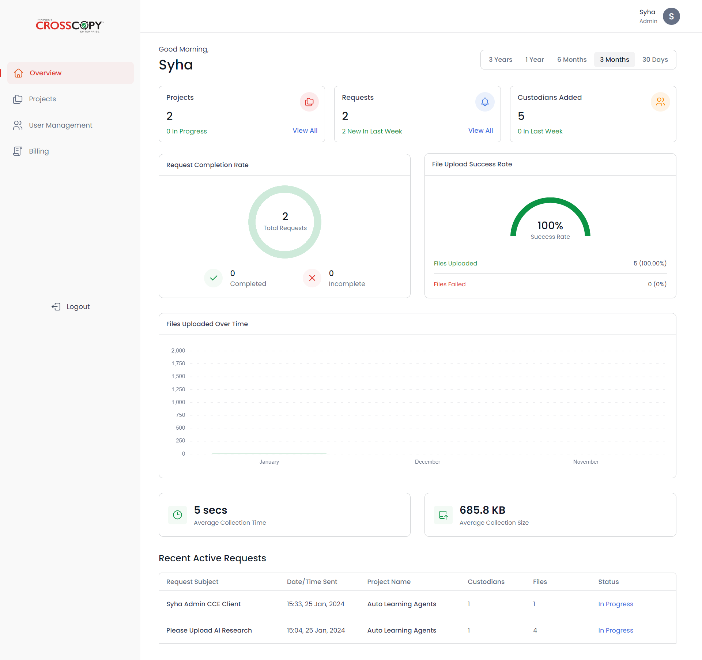
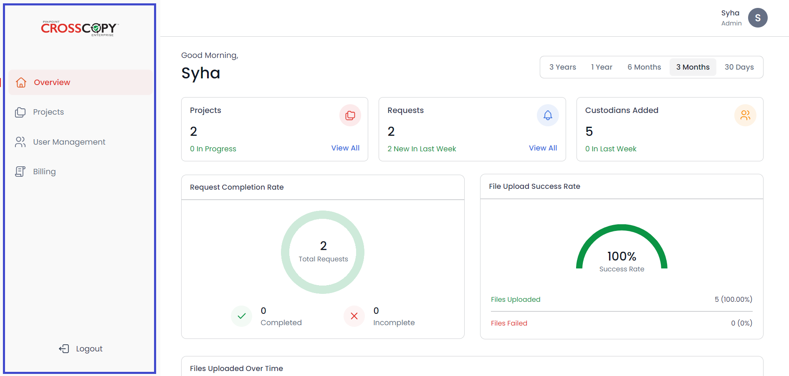

CCE Admin
Dashboard
After successfully logging in, you will be able to see your dashboard. It
will look something like this:

Sidebar
On the left of the screen you will see a navigation bar (sidebar).

You can navigate through the entire portal using the sidebar. The sidebar
has the following buttons:
- Overview - to view the admin dashboard
- Projects - to view and manage all the projects you have created
-
User Management - to view and manage all the users you have created
-
Billing -
- To view your billing status
- To view and manage your profile
- Logout - to log out of the system
Profile
Click on your avatar on the top right corner to access and manage your
profile.

The profile page will look something like this:

You can perform multiple actions on this page, including
-
Manage your personal information - you can edit any information you want
-
Change your password - if you wish to update your password, you can do
that by clicking on the Change Password button.
-
Connect your Azure account - you can also quickly connect your Azure
account from here by clicking on the
Connect Azure Account button. This will let you sign in to
CrossCopy directly from your Azure account. The image below shows the
main login screen with the option to log in via Azure.
-
Set up target sources - you can also set up your target sources on the
profile page. Target sources are where your projects and files are
stored. There are 2 types of target sources:
- AWS buckets,
- Azure Containers
If you haven’t set up any resources, or created any project yet,
you will have to set up your target sources.
For more details on
how to set up your target sources, go to
Set up AWS Buckets and Azure Containers
After you have set up and configured your target sources, and/or made any
updates to your profile, click on the Save Changes button on the
profile page.
However, if you do not want to commit your changes, click on the
Cancel button to go back to the main dashboard without making any
changes to your profile.
Dashboard - Date Filters
You can use date filters to view your data at different intervals of time.
You can view your data on the dashboard by
- 3 years
- 1 year
- 6 months
- 3 months
- 30 days
Dashboard - Overview Cards
The top cards show a quick overview of essential statistics:

-
Projects - the card shows
- Total number of projects created
- Total number of projects in progress
- A button to view all of your projects
-
Requests - the card shows
- Total number of requests created
- Total number of new requests created
- A button to view all of your requests
-
Custodians Added - the card shows
- Total number of custodians added
- Total number of new custodians added
- A button to view all of your custodians
Dashboard - Request Completion Rate
This card consists of data showcasing the completion rate of all of your
requests:
- Total number of requests created
- Total number of requests completed
-
Total number of requests marked as incomplete due to no files uploaded
- The pie chart shows the rate of requests completed

Dashboard - File Upload Success Rate
The card displays statistics related to the success rate of file uploads,
including both the number and percentage of files uploaded successfully,
as well as those that failed to upload. This information is also
represented using a chart.

Dashboard - Files Uploaded Over Time
This section displays data regarding files uploaded over a period of time.

-
The bar chart displays the total size of files uploaded every month
-
The Average Collection Time card shows the average time taken for file
upload
-
The Average Collection Size card shows the average size of the files
uploaded
Dashboard - Recent Active Requests
The Recent Active Requests table displays information about the requests
generated recently that are still active.
The information includes
-
The request’s subject - clicking on the subject will redirect you to the
detailed view of the request
- Date/time at which the request was generated
-
The name of the project in which the request is generated - clicking on
the project’s name will redirect you to the detailed view of the project
-
The number of custodians in the respective request - clicking on the
number will redirect you to the detailed view of the custodians
-
The number of files in the respective request - clicking on the number
will redirect you to the detailed view of the files uploaded
- The status of the request